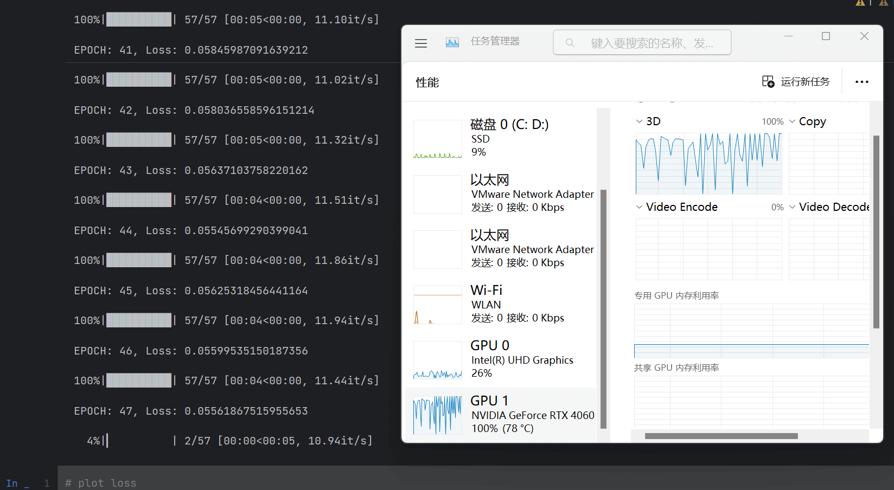

资源
笔记
-
SAM 真是太牛逼啦！但是它在医学图像上的性能十分有限。
-
介绍了 MedSAM：
-
设计了一个大规模的医学图像数据集，包含 11 种模式，20 多万个蒙版。提供了关于在定制的新数据集上微调 SAM 的分步教程。
-
开发了一种简单的微调方法（simple fine-tuning method），将 SAM 用于普通医学图像分割。在 21 个 3D 分割任务和 9 个 2D 任务中，比默认 SAM 要好使。
-
第一个也是最著名的**基础分割模型（segmentation foundation model）**是 SAM，它在超过 1B 个蒙版上进行训练，可以根据提示（例如，边界框、点、文本）或以全自动的方式生成准确的对象蒙版。但是自然图像和医学图像之前存在显著差异，这些模型在医学图像分割中的适用性仍然有限，在一些典型的医学图像分割任务（对象边缘信息较弱）中不好使。
SAM 利用了基于 transformer 的架构：
-
使用 transformer-based 的**图像编码器（image encoder）**提取图像特征
- pretrained with masked auto-encoder modeling，可以处理高分辨率图像（即 ），获得的图像嵌入是
-
使用**提示编码器（prompt encoder）**结合用户交互
- 支持四种不同的提示
- 点：通过傅里叶位置编码和两个可学习的标记进行编码，分别用于指定前景和背景
- 边界框：通过其左上角的点和右下角的点进行编码
- 文本：由 CLIP 中经过预训练的文本编码器进行编码
- 掩码：与输入图像具有相同的分辨率，输入图像由卷积特征图编码
- 支持四种不同的提示
-
使用**掩码解码器（mask encoder）**来基于图像嵌入、提示嵌入和输出令牌生成分割结果和置信度得分。
- 采用了轻量级设计，由两个转换器层组成，具有动态蒙版预测头和两个交集（Intersection-over-Union，IOU）分数回归头。
蒙版预测头可以生成 3 个 ，分别对应于整个对象、部分对象和子对象。
SAM 支持 3 中主要的分割模式：
- 以全自动方式分割所有内容（segment everything in a fully automatic way）
- 没有语义标签，一些分割的东西无意义
- 边界框模式（bounding box mode）
- 只给出左上角和右下角的点，就可以为右肾提供良好的分割结果
- 点模式（point mode）
- 先给一个前景点，再给一个背景点
我们认为，在医学图像分割任务中使用 SAM 时，基于边界框的分割模式比基于分割一切和点的分割模式具有更广泛的实用价值。
为了使 SAM 适用于医学图像分割，有必要选择适当的用户提示和网络组件进行微调。
基于以上分析，边界框提示是指定分割目标的正确选择。SAM 的网络架构包含三个主要组件：图像编码器、提示编码器和掩码解码器。人们可以选择微调它们的任何组合。
-
图像编码器基于 vision transformer，该转换器在 SAM 中具有最大的计算开销。为了降低计算成本，将图像编码器 冻结
-
提示编码器对边界框的位置信息进行编码，并且可以从 SAM 中预先训练的边界框编码器中重复使用，冻结
-
只 微调 掩码解码器
由于图像编码器可以在提示模型之前应用，因此我们可以预先计算所有训练图像的图像嵌入，以避免每次提示的图像嵌入的重复计算，这可以显著提高训练效率。掩码解码器只需要生成一个掩码，而不需要生成三个掩码，因为在大多数情况下，边界框提示可以清楚地指定预期的分割目标。
每个数据集被随机分为80个和20个，用于训练和测试。排除了像素小于 100 的分割目标。由于 SAM 是为 2D 图像分割而设计的，我们将3D图像（即CT、MR、PET）沿平面外维度划分为2D切片。然后，我们使用预先训练的 ViT-Base 模型作为图像编码器，并通过将归一化的图像馈送到图像编码器来离线计算所有图像嵌入（图像编码器将图像大小转换为 ）。在训练期间，边界框提示是从具有0-20个像素的随机扰动的地面实况掩码生成的。损失函数是Dice损失和交叉熵损失之间的未加权和，已被证明在各种分割任务中是稳健的。Adam 优化器对网络进行了优化，初始学习率为1e-5。
使用骰子相似系数（DSC）和归一化表面距离（NSD，公差 1mm）来评估基本事实和分割结果之间的区域重叠率和边界一致性，这是两种常用的分割指标。
我们的代码和经过训练的模型是公开的，我们提供了关于在定制的新数据集上微调SAM的分步教程。我们期待着与社区合作，共同推进这一令人兴奋的研究领域。
代码
配置
新建一个 conda 环境：
1 | |
激活之：
1 | |
离线安装 pytorch：
从 download.pytorch.org/whl/torch_stable.html 下载对应版本的 pytorch 和 torchvision：
torch-2.0.0+cu117-cp310-cp310-win_amd64.whltorchvision-0.15.1+cu117-cp310-cp310-win_amd64.whl
安装之：
1 | |
1 | |
下载仓库：bowang-lab/MedSAM：MedSAM：Segment Anything in Medical Images的官方存储库。 (github.com)
在仓库文件夹下:
1 | |
在自定义数据集上微调 SAM
- 打开
pre_CT.py，查看里面parser都定义了什么玩意儿：
1 | |
| 参数名 | 简称 | 类型 | 默认值 | 备注 |
|---|---|---|---|---|
| –nii_path | -i | str | ‘data/FLARE22Train/images’ | path to the nii images |
| –gt_path | -gt | str | ‘data/FLARE22Train/labels’ | path to the ground truth |
| –npz_path | -o | str | ‘data/Npz_files’ | path to save the npz files |
| –image_size | int | 256 | image size | |
| –modality | str | ‘CT’ | modality 形态 | |
| –anatomy | str | ‘Abd-Gallbladder’ | anatomy 解剖 | |
| –img_name_suffix | str | ‘_0000.nii.gz’ | image name suffix 图像名称后缀 | |
| –label_id | int | 9 | label id | |
| –prefix | str | ‘CT_Abd-Gallbladder_’ | prefix 前缀 | |
| –model_type | str | ‘vit_b’ | model type 模型类别 | |
| –checkpoint | str | ‘work_dir/SAM/sam_vit_b_01ec64.pth’ | checkpoint | |
| –device | str | ‘cuda:0’ | device | |
| –seed | int | 2023 | random seed 随机数种子 |
- 下载 sam_vit_b_01ec64.pth 并将其放置在
work_dir/SAM/中：
3D
- 下载 FLARE22Train.zip 并将其解压，放置在
data/中：
该数据集包含 50 个腹部 CT 扫描，每个扫描包含一个包含 13 个器官的注释面罩。器官标签的名称可在 MICCAI FLARE2022 上找到。 在本教程中，我们将微调 SAM 以进行胆囊 (gallbladder) 分割。
nii.gz 是一种常见的医学影像数据格式。它是基于 NIfTI（Neuroimaging Informatics Technology Initiative）格式的一种压缩文件，通常用于存储头颅和身体的 MRI 和 CT 数据。该格式包含图像的三维体积数据，以及与图像相关的元数据信息，如图像分辨率、采集参数等。nii.gz 文件可以通过各种软件进行读取、编辑和处理，如 FSL、SPM、ANTs 等。
-
开跑
pre_CT.py这只是个预处理！-
拆分数据集：80% 用于训练，20% 用于测试
-
图像归一化
-
预计算图像嵌入
-
将归一化图像
imgs.npy、真实情况掩码gts.npy和图像img_embeddings.npy嵌入另存为文件npz
-
npy 文件是 numpy 保存单个数组的一种二进制文件格式，它可以包含一个 numpy 数组，这个数组的维度和类型等信息都可以被存储在这个文件中。npy 文件通过使用 numpy 库中的 load() 和 save() 函数进行读写。
相比于 txt、csv 这样的文本型数据文件，npy 文件具有更好的性能和可靠性。因为文本型数据需要进行字符串转化和解析等操作，在面对大量数据时会出现读写速度较慢的情况，并且数据解析容易受到不同系统和软件的影响而出现错误。而 npy 文件采用二进制存储，可以直接将内存中的二进制数组写入文件，不需要转化和解析字符串，性能更高，同时因为没有转化字符类型，也不存在因不同系统和软件的影响而出现的数据解析错误。
npz 是 numpy 保存数组的一种格式，它是一种压缩文件格式，可以将多个 numpy 数组打包存放在一个文件中，其压缩率较高。使用 np.savez_compressed() 函数可以生成 .npz 文件，使用 np.load() 函数可以读取 .npz 文件中的数组。相比其他文件格式（如 .txt、.csv 等），.npz 文件可以更方便地用于存储和加载大型数组数据集，因为它可以使用 numpy 库提供的高效的加载和存储方法。此外，.npz 文件还可以轻松地传递和共享数组数据集，并且不像其他文件格式那样需要手动编写 IO 操作代码来读取和写入数据。
- 然后就可以跑
finetune_and_inference_tutorial_3D_dataset.ipynb！
2D
- 从 MedSAMDemo_2D.zip - Google Drive 下载 2D 数据集，放置在
data/中：
- 开跑
pre_grey_rgb2D.py这只是个预处理！好在这部分用时不是很长，就拿笔记本直接跑了。
- 获得
data\demo2D_vit_b\demo2d.npz！然后就可以跑finetune_and_inference_tutorial_2D_dataset.ipynb！
又遇俩坑，填填填：
1 | |
可以跑了！

看代码
pre_grey_rgb2D.py
这个代码主要是对数据集进行预处理。
set up the parser
| name | type | default | help |
|---|---|---|---|
| -i, --img_path | str | data/MedSAMDemo_2D/train/images | path to the images |
| -gt, --gt_path | str | data/MedSAMDemo_2D/train/labels | path to the ground truth (gt) |
| -o, --npz_path | str | data/demo2D | path to save the npz files |
| –data_name | str | demo2d | dataset name; used to name the final npz file, e.g., demo2d.npz |
| –image_size | int | 256 | image size |
| –img_name_suffix | str | .png | image name suffix |
| –label_id | int | 255 | label id |
| –model_type | str | vit_b | model type |
| –checkpoint | str | work_dir/SAM/sam_vit_b_01ec64.pth | checkpoint |
| –device | str | cuda:0 | device |
| –seed | int | 2023 | random seed |
1 | |
set up the model
1 | |
convert 2d grey or rgb images to npz file
1 | |
save all 2D images as one npz file: ori_imgs, ori_gts, img_embeddings
stack the list to array
1 | |
finetune_and_inference_tutorial_2D_dataset.ipynb
在获得预处理好的数据集后，就可以运行 finetune_and_inference_tutorial_2D_dataset.ipynb 对 SAM 模型进行 fine-tune。
class NpzDataset(Dataset)
1 | |
test dataset class and dataloader
1 | |
set up model for fine-tuning
1 | |
1 | |
training
原作者用的是 NVIDIA RTX A5500，配有 24 GB 显存，而我的 RTX 4060 只有 8GB 显存，emmm 只能把 batch_size 调小。我调成了 8。训练过程中显存使用量一直维持在 2GB，感觉可以再调大些？
1 | |
1 | |
plot loss
1 | |
如果我把 pycharm 的主题设成深色的，matplotlib 输出的图片居然也会是深色的……
load the original SAM model
1 | |
predict the segmentation mask using the fine-tuned model
1 | |
1 | |
计算准确率
表明我们这个操作确实牛逼！
1 | |
1 | |
visualization functions
1 | |